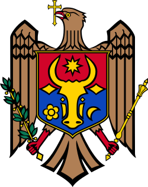

Moldova ascunde un fenomen geologic unic în Europa, „Suta de Movile”, unde peste 3.500 de coline unduiesc pe 1.600 de hectare, considerate a fi recife fosilizate ale unor mări antice vechi de 10-20 de milioane de ani . De asemenea, deține cel mai mare depozit subteran de vinuri din lume, cu galerii de peste 200 de kilometri și aproximativ 2 milioane de sticle, inclus în Cartea Recordurilor .
 |
Norvegia are al doilea cel mai lung litoral din lume, cu peste 700 de fiorduri și nenumărate plaje izolate . În micul orășel Hessdalen, locuitorii au raportat timp de zeci de ani apariția unor lumini inexplicabile, iar în prezent există chiar și un „camping OZN” deschis turiștilor .
Suedia acordă fiecărei persoane dreptul constituțional de a hoinări liber prin orice colț al naturii, cunoscut sub numele de „Allemansrätten” (dreptul public de acces) . În plus, aproximativ 97% din suprafața țării este nelocuită, iar populația totală de 10,5 milioane ar încăpea într-un singur mega-oraș .